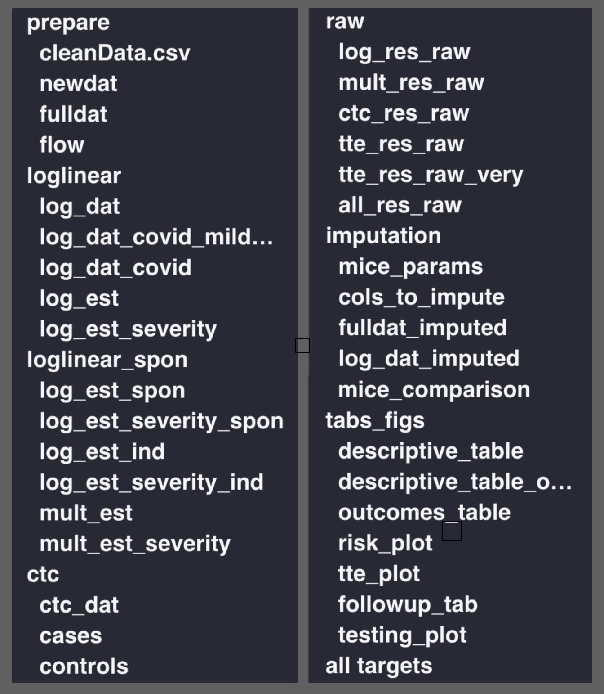
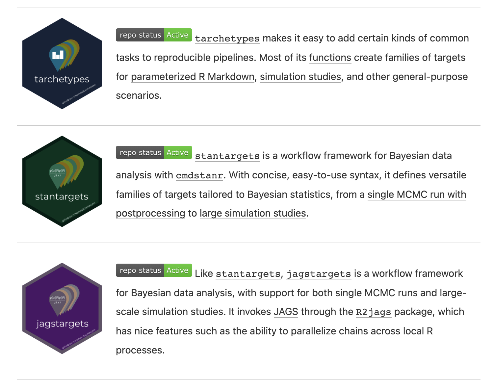

{targets}
What is {targets}?

“a Make-like pipeline tool for statistics and data science in R”
- manage a sequence of computational steps
- only update what needs updating
- ensure that the results at the end of the pipeline are still valid
Script-based workflow
01-data.R
library(tidyverse)
data <- read_csv("data.csv", col_types = cols()) %>%
filter(!is.na(Ozone))
write_rds(data, "data.rds")02-model.R
library(tidyverse)
data <- read_rds("data.rds")
model <- lm(Ozone ~ Temp, data) %>%
coefficients()
write_rds(model, "model.rds")03-plot.R
Problems with script-based workflow
- Reproducibility: if you change something in one script, you have to remember to re-run the scripts that depend on it
- Efficiency: that means you’ll usually rerun all the scripts even if they don’t depend on the change
- Scalability: if you have a lot of scripts, it’s hard to keep track of which ones depend on which
- File management: you have to keep track of which files are inputs and which are outputs and where they’re saved
# {targets}: The basics
{targets} workflow
R/functions.R
get_data <- function(file) {
read_csv(file, col_types = cols()) %>%
filter(!is.na(Ozone))
}
fit_model <- function(data) {
lm(Ozone ~ Temp, data) %>%
coefficients()
}
plot_model <- function(model, data) {
ggplot(data) +
geom_point(aes(x = Temp, y = Ozone)) +
geom_abline(intercept = model[1], slope = model[2])
}{targets} workflow
_targets.R
library(targets)
tar_source()
tar_option_set(packages = c("tidyverse"))
list(
tar_target(file, "data.csv", format = "file"),
tar_target(data, get_data(file)),
tar_target(model, fit_model(data)),
tar_target(plot, plot_model(model, data))
)Run tar_make() to run pipeline
Tip
use_targets() will generate a _targets.R script for you to fill in.
{targets} workflow
Targets are “hidden” away where you don’t need to manage them
├── _targets.R
├── data.csv
├── R/
│ ├── functions.R
├── _targets/
│ ├── objects
│ ├── data
│ ├── model
│ ├── plotTip
You can of course have multiple files in R/; tar_source() will source them all
My typical workflow with {targets}
- Read in some data and do some cleaning until it’s in the form I want to work with.
- Wrap that in a function and save the file in
R/. - Run
use_targets()and edit_targets.Raccordingly, so that I list the data file as a target andclean_dataas the output of the cleaning function. - Run
tar_make(). - Run
tar_load(clean_data)so that I can work on the next step of my workflow. - Add the next function and corresponding target when I’ve solidified that step.
Tip
I usually include library(targets) in my project .Rprofile so that I can always call tar_load() on the fly
_targets.R tips and tricks
list(
tar_target(
data_file,
"data/raw_data.csv",
format = "file"
),
tar_target(
raw_data,
read.csv(data_file)
),
tar_target(
clean_data,
clean_data_function(raw_data)
)
)Tip
I like to pair my functions/targets by name so that the workflow is clear to me
_targets.R tips and tricks
preparation <- list(
...,
tar_target(
clean_data,
clean_data_function(raw_data)
)
)
modeling <- list(
tar_target(
linear_model,
linear_model_function(clean_data)
),
...
)
list(
preparation,
modeling
)Tip
By grouping the targets into lists, I can easily comment out chunks of the pipeline to not run the whole thing
_targets.R tips and tricks

Tip
In big projects, I comment my _targets.R file so that I can use the RStudio outline pane to navigate the pipeline (my buggy function)
Key {targets} functions
use_targets()gets you started with a_targets.Rscript to fill intar_make()runs the pipeline and saves the results in_targets/objects/tar_make_future()runs the pipeline in parallel1tar_load()loads the results of a target into the global environment
(e.g.,tar_load(clean_data))tar_read()reads the results of a target into the global environment
(e.g.,dat <- tar_read(clean_data))tar_visnetwork()creates a network diagram of the pipelinetar_outdated()checks which targets need to be updatedtar_prune()deletes targets that are no longer in_targets.Rtar_destroy()deletes the_targets/directory if you need to burn everything down and start again
Advanced {targets}
“target factories”
{tarchetypes}: reports
Render documents that depend on targets loaded with tar_load() or tar_read().
tar_render()renders an R Markdown documenttar_quarto()renders a Quarto document (or project)
Warning
It can’t detect dependencies like tar_load(ends_with("plot"))
What does report.qmd look like?
---
title: "My report"
---
```{r}
library(targets)
tar_load(results)
tar_load(plots)
```
There were `r results$n` observations with a mean age of `r results$mean_age`.
```{r}
library(ggplot2)
plots$age_plot
```Because report.qmd depends on results and plots, it will only be re-rendered if either of those targets change.
Tip
The extra_files = argument can be used to force it to depend on additional non-target files
{tarchetypes}: branching
Using data from the National Longitudinal Survey of Youth,
_targets.R
we want to investigate the relationship between age at first birth and hours of sleep on weekdays and weekends among moms and dads separately
Option 1
Create (and name) a separate target for each combination of sleep variable ("sleep_wkdy", "sleep_wknd") and sex (male: 1, female: 2):
targets_1 <- list(
tar_target(
model_1,
model_function(outcome_var = "sleep_wkdy", sex_val = 1, dat = dat)
),
tar_target(
coef_1,
coef_function(model_1)
)
)… and so on…
[1] 0.00734859Option 2
Use tarchetypes::tar_map() to map over the combinations for you (static branching):
targets_2 <- tar_map(
values = tidyr::crossing(
outcome = c("sleep_wkdy", "sleep_wknd"),
sex = 1:2
),
tar_target(
model_2,
model_function(outcome_var = outcome, sex_val = sex, dat = dat)
),
tar_target(
coef_2,
coef_function(model_2)
)
)
tar_load(starts_with("coef_2"))
c(coef_2_sleep_wkdy_1, coef_2_sleep_wkdy_2, coef_2_sleep_wknd_1, coef_2_sleep_wknd_2)[1] 0.00734859 0.01901772 0.02595109 0.01422970Option 2, cont.
Use tarchetypes::tar_combine() to combine the results of a call to tar_map():
combined <- tar_combine(
combined_coefs_2,
targets_2[["coef_2"]],
command = vctrs::vec_c(!!!.x),
)
tar_read(combined_coefs_2)coef_2_sleep_wkdy_1 coef_2_sleep_wkdy_2 coef_2_sleep_wknd_1 coef_2_sleep_wknd_2
0.00734859 0.01901772 0.02595109 0.01422970 command = vctrs::vec_c(!!!.x) is the default, but you can supply your own function to combine the results
Option 3
Use the pattern = argument of tar_target() (dynamic branching):
targets_3 <- list(
tar_target(
outcome_target,
c("sleep_wkdy", "sleep_wknd")
),
tar_target(
sex_target,
1:2
),
tar_target(
model_3,
model_function(outcome_var = outcome_target, sex_val = sex_target, dat = dat),
pattern = cross(outcome_target, sex_target)
),
tar_target(
coef_3,
coef_function(model_3),
pattern = map(model_3)
)
)
tar_read(coef_3)coef_3_85bbb1b6 coef_3_c47db1e2 coef_3_5ba8b6ec coef_3_19c76a86
0.00734859 0.01901772 0.02595109 0.01422970 Branching
| Dynamic | Static |
|---|---|
| Pipeline creates new targets at runtime. | All targets defined in advance. |
| Cryptic target names. | Friendly target names. |
| Scales to hundreds of branches. | Does not scale as easily for tar_visnetwork() etc. |
| No metaprogramming required. | Familiarity with metaprogramming is helpful. |
Branching
- The book also has an example of using metaprogramming to map over different functions
- i.e. fit multiple models with the same arguments
- Static and dynamic branching can be combined
- e.g.
tar_map(values = ..., tar_target(..., pattern = map(...)))
- e.g.
- Branching can lead to slowdowns in the pipeline (see book for suggestions)
{tarchetypes}: repetition
tar_rep() repeats a target multiple times with the same arguments
targets_4 <- list(
tar_rep(
bootstrap_coefs,
dat |>
dplyr::slice_sample(prop = 1, replace = TRUE) |>
model_function(outcome_var = "sleep_wkdy", sex_val = 1, dat = _) |>
coef_function(),
batches = 10,
reps = 10
)
)The pipeline gets split into batches x reps chunks, each with its own random seed
{tarchetypes}: mapping over iterations
sensitivity_scenarios <- tibble::tibble(
error = c("small", "medium", "large"),
mean = c(1, 2, 3),
sd = c(0.5, 0.75, 1)
)tar_map_rep() repeats a target multiple times with different arguments
{tarchetypes}: mapping over iterations
coef error mean sd tar_batch tar_rep tar_seed tar_group
1 0.0061384611 small 1 0.5 1 1 -1018279263 2
2 -0.0005346553 small 1 0.5 1 2 -720048594 2
3 0.0073674844 small 1 0.5 1 3 -1478913096 2
4 0.0039254289 small 1 0.5 1 4 -1181272269 2
5 0.0108489430 small 1 0.5 1 5 135877686 2
6 0.0029473286 small 1 0.5 1 6 -564559689 2Ideal for sensitivity analyses that require multiple iterations of the same pipeline with different parameters
tar_read(sensitivity_analysis) |>
dplyr::group_by(error) |>
dplyr::summarize(q25 = quantile(coef, .25),
median = median(coef),
q75 = quantile(coef, .75)) error q25 median q75
1 large 0.001427986 0.007318120 0.011399772
2 medium 0.004158480 0.007770285 0.011367160
3 small 0.004058926 0.006614599 0.009004322Conclusion
{targets}is a great tool for managing complex workflows{tarchetypes}makes it even more powerful- The user manual is a great resource for learning more